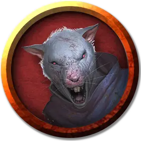

Шард Шаннер
Shard Shunner
Маленький Гуманоид (Полурослик, Перевертыш), законно-злой, именной НИП

Класс Доспеха 12
Хиты 27 (6к6 + 6)
Скорость 30 футов
| мод | спас | ||
|---|---|---|---|
| СИЛ | 10 | +0 | +0 |
| ЛОВ | 15 | +2 | +2 |
| ТЕЛ | 12 | +1 | +1 |
| мод | спас | ||
|---|---|---|---|
| ИНТ | 11 | +0 | +0 |
| МДР | 10 | +0 | +0 |
| ХАР | 8 | −1 | −1 |
Навыки Восприятие +2, Скрытность +4
Иммунитет к урону дробящий, колющий, рубящий от немагических атак, кроме нанесённых посеребрённым оружием
Чувства тёмное зрение 60 футов (только в облике крысы), пассивное Восприятие 12
Языки Общий, Воровской жаргон, Полуросликов
Опасность 2 (450 опыта)
Бонус мастерства +2
Особенности
Перевертыш. Полурослик- веркрыса может действием превратиться в гигантскую крысу, гибрид крысы и гуманоида, или же принять свой истинный облик. Все его характеристики кроме размера остаются одинаковыми во всех обликах. Все несомое и носимое им снаряжение не превращается. Он принимает свой истинный облик, если умирает.
Тонкий нюх. Полурослик- веркрыса совершает с преимуществом проверки Мудрости (Восприятие), полагающиеся на обоняние.
Проворство полуросликов. Полурослик- веркрыса может проходить сквозь пространство, занятое существами, чей размер больше его.
Храбрый. Полурослик- веркрыса совершает с преимуществом спасброски от испуга.
Действия
Мультиатака (только в облике гуманоида или гибрида). Полурослик- веркрыса совершает две атаки, только одна из которых может быть укусом.
Укус (только в облике крысы или гибрида). Рукопашная атака оружием: +4 к попаданию, досягаемость 5 футов, одна цель. Попадание: Колющий урон 4 (1к4 + 2). Если цель — гуманоид, она должна преуспеть в спасброске Телосложения Сл 11, иначе станет проклятой ликантропией веркрысы.
Короткий меч (только в облике гуманоида или гибрида). Рукопашная атака оружием: +4 к попаданию, досягаемость 5 футов, одна цель. Попадание: Колющий урон 5 (1к6 + 2).
Ручной арбалет (только в облике гуманоида или гибрида). Дальнобойная атака оружием: +4 к попаданию, дистанция 30/120 футов, одна цель. Попадание: Колющий урон 5 (1к6 + 2).
Описание
Члены банды Шард Шаннер наняты Эммеком Фруном, чтобы помешать персонажам управлять таверной на аллее Черепа Тролля.
Веркрысы — это хитрые ликантропы, скользкие и алчные личности. Они жилистые и раздражительные в гуманоидном облике, с тонкими волосами и бегающими глазами. В своем человеческом и гибридном облике веркрысы предпочитают легкое оружие, а в качестве тактики во время боя предпочитают устроить засаду, а не идти в лоб. Кроме того, веркрысы могут укусить в своем зверином облике, что помогает им незаметно проникать в ряды врага или убегать из сражения.
Клан веркрыс действует примерно как гильдия воров. Оборотни распространяют свое проклятье только на тех, кого они хотят добавить в свой клан. Веркрысы, которые были обращены по случайности или сорвались с цепи и больше не подчиняются клану, быстро оказываются мёртвыми.
Кланы веркрыс можно найти в развитых городах и поселениях. Они предпочитают скрываться в подвалах и катакомбах. Обитая в подземельях под крупными городами, веркрысы считают свои владения охотничьими угодьями. Часто вместе с ними живут крысы и гигантские крысы.
См. дополнительно статью: "Бестиарий: Ликантропы"